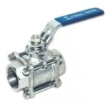
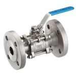
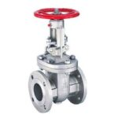
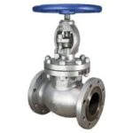
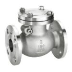
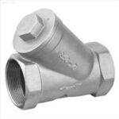
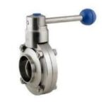
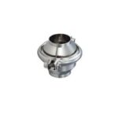
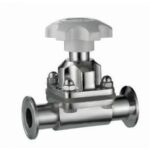

Products / Valves
Stainless & carbon steel ball, gate, globe and check valves, certified stock.

Ball Valve — 2PC Body
Ball Valve — Flanged Type
Gate Valve — Flanged
Globe Valve — Flanged
Check Valve — Flanged
Threaded Strainer (Y-Strainer) Needle Valve
Needle Valve
Dairy Butterfly Valve
Dairy Check Valve
Dairy Diaphragm ValveValves are essential components within a piping system, regulating the flow, pressure and direction of fluids, gases and fumes to keep an installation performing as designed. Stainless steel valve bodies, cast in grades such as CF8 and CF8M, offer excellent corrosion resistance for corrosive or sanitary service, while carbon steel valves — cast or forged to A216 WCB and A105 — remain a durable, cost-effective choice for general industrial applications. Both are stocked across a range of end connections, pressure classes and dimension standards to suit line requirements.
The stock range spans ball, gate, globe, check and needle valves, butterfly valves and Y-strainers for isolation, regulation, backflow prevention and line protection, alongside sanitary dairy butterfly, check and diaphragm valves for hygienic food, beverage and pharmaceutical process lines. Sizes run from ½" NB to 12" NB, manufactured to ANSI B16.5, DIN and JIS standards, with flanged, BSPT, NPT or socket-weld ends across classes from 150# up to 3000# and PN10 to PN25.
Two-piece body ball valves offer a compact, cost-effective design for on/off flow control, with a quarter-turn bore that gives full, unobstructed flow when open and a tight shut-off when closed. Supplied in stainless and carbon steel, sizes 1/2" to 4", in grades 304 & 316, with BSPT, NPT or socket-weld end connections.
Spec: Size 1/2"–4" · Grade 304 & 316 · Type BSPT, NPT, SWThree-piece body construction allows the centre section, seats and ball to be removed and serviced without taking the valve out of the line, making it well suited to applications requiring frequent inspection or maintenance. Available in stainless and carbon steel, grades CF8 & CF8M, sizes 1/2" to 20", with BSPT, NPT, socket-weld or butt-welded ends.
Spec: Size 1/2"–20" · Grade CF8 & CF8M · Type BSPT, NPT, SW, Butt-weldedFlanged ball valves provide a bolted, leak-tight connection suited to larger line sizes and higher-pressure duty across petrochemical and general process piping systems. Available in stainless and carbon steel, grades CF8 & CF8M, sizes 1/2" to 20", classes PN-16, PN-40 & 10K.
Spec: Size 1/2"–20" · Grade CF8 & CF8M · Class PN-16, PN-40, 10KGate valves give full, unobstructed flow when fully open, making them suited to on/off line isolation rather than throttling duty. Supplied in stainless steel, carbon steel, cast iron and forged steel, grades CF8, CF8M & A-105, sizes ½" to 20", with flanged, BSPT, NPT or socket-weld end connections.
Spec: Size ½"–20" · Grade CF8, CF8M, A-105 · Class 150#, 300#, 600#, 900#, PN-16, PN-40, 10KGlobe valves are built for throttling and flow regulation, using a linear-motion disc to give precise, repeatable control across a wide pressure and temperature range. Supplied in stainless steel, carbon steel, cast iron and forged steel, grades CF8, CF8M & A-105, sizes ½" to 20", with flanged, BSPT, NPT or socket-weld end connections.
Spec: Size ½"–20" · Grade CF8, CF8M, A-105 · Class 150#, 300#, 600#, 900#, PN-16, PN-40, 10KCheck valves permit flow in a single direction only, protecting pumps and downstream equipment from backflow and reverse-flow damage. Supplied in stainless steel & mild steel, grades CF8 & CF8M, sizes ½" to 20", with flanged, BSPT, NPT or socket-weld end connections.
Spec: Size ½"–20" · Grade CF8 & CF8M · Class 150#, 300#, 600#, 900#, 1500#, 2500#, PN-10, PN-16, PN-40, 10KY-strainers filter debris and particulate matter from the process fluid, protecting downstream pumps, valves and meters from damage or blockage. Supplied in stainless steel, carbon steel & cast iron, grades CF8 & CF8M, sizes 1/2" to 20", with flanged, BSPT or NPT end connections.
Spec: Size 1/2"–20" · Grade CF8 & CF8M · Class 150#, 300#, 600#, 900#, PN-16, PN-40Needle valves use a tapered, needle-shaped plunger to give fine, precise flow regulation, making them well suited to low-flow and instrumentation lines where accurate throttling is required.
Spec: Precision flow regulation for instrumentation & low-flow linesSanitary butterfly valves for hygienic process lines, offering quick quarter-turn operation and a crevice-free bore that's easy to clean, sized for food, beverage and pharmaceutical service. Supplied in stainless steel & mild steel, grade 316L, sizes 19mm to 101mm.
Spec: Size 19mm–101mm · Grade 316LSanitary check valves prevent backflow in hygienic process lines, designed for quick dismantling and cleaning across dairy, food and beverage processing. Supplied in stainless steel & mild steel, grade 316L, sizes 19mm to 101mm.
Spec: Size 19mm–101mm · Grade 316LDiaphragm valves give smooth, crevice-free flow control ideal for sanitary applications where product purity and easy sterilisation are essential. Supplied in stainless steel & mild steel, grade 316L, sizes 19mm to 101mm.
Spec: Size 19mm–101mm · Grade 316LThe range of valves stocked by Murtaza Corporation includes: